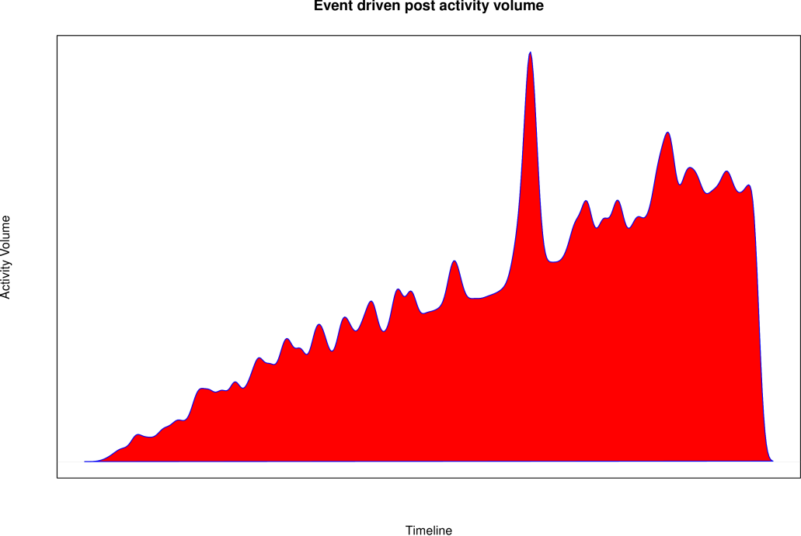

When talking about DATAGEN and other graph generators with social network characteristics, our attention is typically borrowed by the friendship subgraph and/or its structure. However, a social graph is more than a bunch of people being connected by friendship relations, but has a lot more of other things is worth to look at. With a quick view to commercial social networks like Facebook, Twitter or Google+, one can easily identify a lot of other elements such as text images or even video assets. More importantly, all these elements form other subgraphs within the social network! For example, the person activity subgraph is composed by posts and their replies in the different forums/groups in a social network, and has a tree-like structure connecting people through their message interactions.
When looking at the LDBC Social Network Benchmark (SNB) and its interactive workload, one realizes that these other subgraphs, and especially the person activity subgraph, play a role even more important than that played by the friendship subgraph. Just two numbers that illustrate this importance: 11 out of the 14 interactive workload queries needs traversing parts of the person activity subgraph, and about 80% of all the generated data by DATAGEN belongs to this subgraph. As a consequence, a lot of effort has been devoted to make sure that the person activity subgraph is realistic enough to fulfill the needs of the benchmark. In the rest of this post, I will discuss some of the features implemented in DATAGEN that make the person activity subgraph interesting.
Reaslistic Message Content
Messages’ content in DATAGEN is not random, but contains snippets of text extracted from Dbpedia talking about the tags the message has. Furthermore, not all messages are the same size, depending on whether they are posts or replies to them. For example, the size of a post is selected uniformly between a minimum and a maximum, but also, there is a small probability that the content is very large (about 2000 characters). In the case of commets (replies to posts), there is a probability of 0.66 to be very short (“ok”, “good”, “cool”, “thanks”, etc.). Moreover, in real forum conversations, it is tipical to see conversations evolving from one topic to another. For this reason, there is a probability that the tags of comments replying posts to change during the flow of the conversation, moving from post’s tags to other related or randomly selected tags.
Non uniform activity levels
In a real social network, not all the members show the same level of activity. Some people post messages more sporadically than others, whose activity is significantly higher. DATAGEN reproduces this phenomena by correlating the activity level with the amount of friends the person has. That is, the larger the amount of friends a person has, the larger the number of posts it creates, and also, the larger the number of groups it belongs to.
Time correlated post and comment generation
In a real social network, user activity is driven by real world events such as sport events, elections or natural disasters, just to cite a few of them. For this reason, we observe spikes of activity around these events, where the amount of messages created increases significantly during a short period of time, reaching a maximum and then decreasing. DATAGEN emulates this behavior by generating a set of real world events about specific tags. Then, when dates of posts and comments are generated, these events are taken into account in such a way that posts and comments are clustered around them. Also not all the events are equally relevant, thus having spikes larger than others. The shape of the activity is modeled following the model described in [1]. Furthermore, in order to represent the more normal and uniform person activity levels, we also generate uniformly distributed messages along the time line. The following figure shows the user activity volume along the time line.

As we see, the timeline contains spikes of activity, instead of being uniform. Note that the generally increasing volume activity is due to the fact that more people is added to the social network as time advances.
In this post we have reviewed several interesting characteristics of the person activity generation process in DATAGEN. Stay tuned for future blog posts about this topic.
References
[1] Leskovec, J., Backstrom, L., & Kleinberg, J. (2009, June). Meme-tracking and the dynamics of the news cycle. In Proceedings of the 15th ACM SIGKDD international conference on Knowledge discovery and data mining (pp. 497-506). ACM.